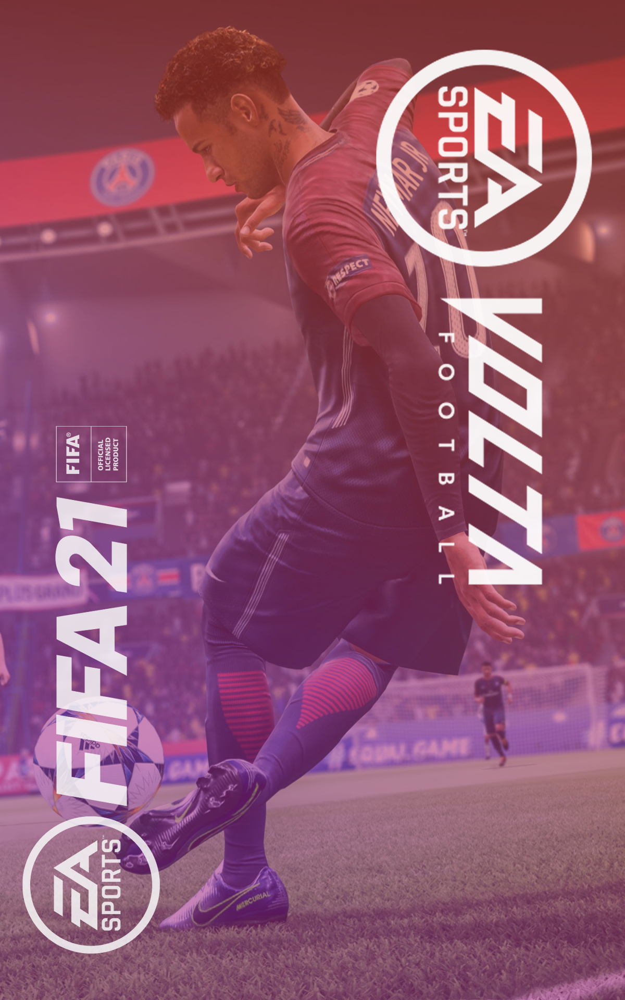
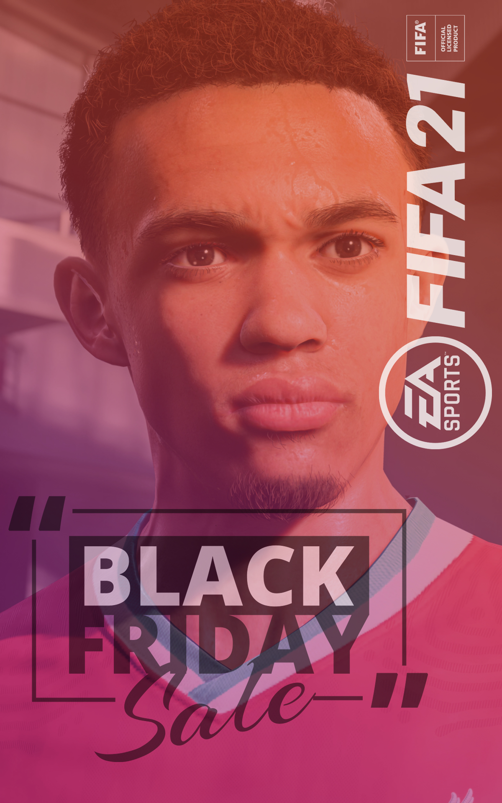
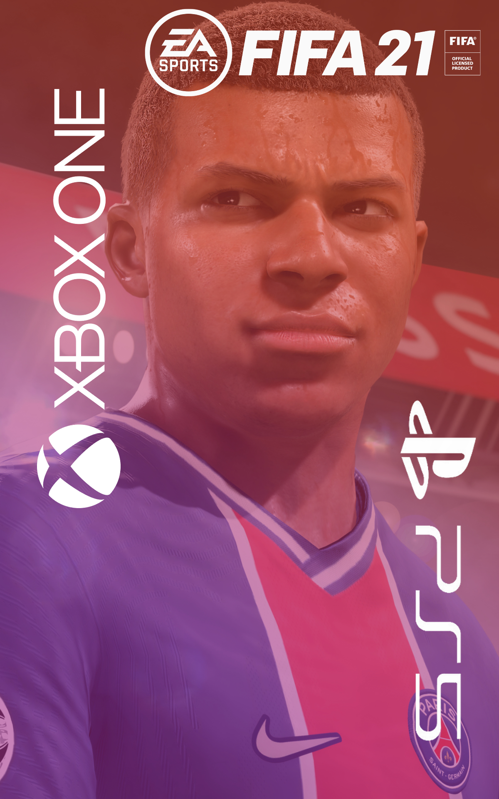

BECKHAM IS BACK
Play FIFA 21 by January 15th 2021, get David Beckham in FUT and VOLTA FOOTBALL**
BECKHAM IS BACK
Play FIFA 21 by January 15th 2021, get David Beckham in FUT and VOLTA FOOTBALL**
FIFA is a series of association football simulation video games developed and released annually by Electronic Arts under the EA Sports label. Football video games such as Sensible Soccer, Kick Off and Match Day had been developed since the late 1980s and already competitive in the games market when EA Sports announced a football game as the next addition to their EA Sports label. The Guardian called the series "the slickest, most polished and by far the most popular football game around"FIFA 21 RATINGS
CAREER MODE
BUILD YOUR TEAM
HISTORY
 When the series began in late 1993, it was notable for being the first to have an official licence from FIFA, the world governing body of football. Popular clubs from around the world, including some teams from Greece, Ukraine and South Africa, are also included, without those nations' entire leagues. The main series has been complemented by additional installments based on single major tournaments, such as the FIFA World Cup, UEFA Champions League, UEFA Europa League and UEFA European Football Championship, as well as a series of football management titles.
When the series began in late 1993, it was notable for being the first to have an official licence from FIFA, the world governing body of football. Popular clubs from around the world, including some teams from Greece, Ukraine and South Africa, are also included, without those nations' entire leagues. The main series has been complemented by additional installments based on single major tournaments, such as the FIFA World Cup, UEFA Champions League, UEFA Europa League and UEFA European Football Championship, as well as a series of football management titles.
FEEL NEXT LEVEL IN FIFA 21
WIN AS ONE
LATEST NEWS


